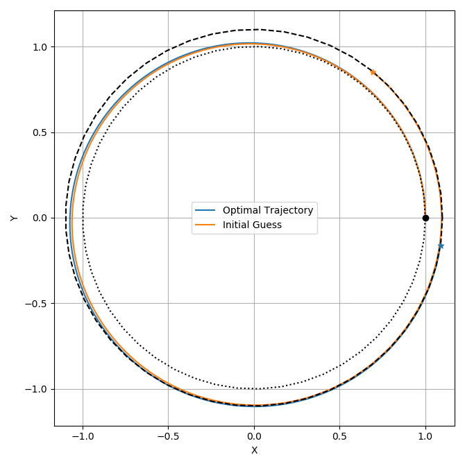

Phase Tutorial#
Having now gone over how to construct both vector functions and odes, we will now take a look at how we leverage them to solve optimal control problems. Continuing with the previous example Python: Vector Functions, we will find a minimum time solar sail transfer between two circular orbits. For this problem we non-dimensionalize \(\mu\) to one and use a sail \(\beta\) value of 0.02.
mu = 1
beta = 0.02
ode = Full_TwoBody_SolarSail_Model(mu, beta)
We will begin our sail with initial state in a circular orbit with radius and velocity equal to one on the x axis.
From here, we will need to generate an initial guess for the transfer to a circular orbit of radius 1.1.
We can generate this initial guess by passing a simple control law to the constructor of the ode integrator as shown below.
The control law ProgradeFunc, takes 6 arguments defined to be the local position and velocity and returns the normalized sum of their unit vectors, which will be used as the sail normal direction.
Orienting the sail in this manner will increase orbit radius.
Note that range(0,6) in the contructor denotes that the integrator should forward state variables 0 through 6 (position and velocity) to the control function.
Once initialized, we call integrate_dense with our initial state, a guess for the final TOF, and specify the number of states we want in the returned trajectory.
R0 = 1
V0 = 1
RF = 1.1
IState = np.zeros((10))
IState[0] = R0
IState[4] = V0
IState[7] = 1
def ProgradeFunc():
args = Args(6)
rhat = args.head3().normalized()
vhat = args.tail3().normalized()
return (rhat + vhat).normalized()
integ = ode.integrator(0.01, ProgradeFunc(), range(0, 6))
IG = integ.integrate_dense(IState, 2.5 * np.pi, 500)
Given this initial guess we can now construct a phase object and begin defining the optimization problem. To construct a phase from an existing ode, we pass a transcription method the phase member along with the initial guess and the number of segments we want to use to approximate the trajectory. For this example we will use 300 LGL3 (Hermite Simpson) segments. Users can currently choose LGL methods of orders 3, 5, and 7. The Higher order methods generally require fewer segements, to achieve a desired accuracy, but for most applications LGL3 is sufficient.
phase = ode.phase(Tmodes.LGL3, IG, 300)
Next we will add a constraint to the phase specifying that initial state in the trajectory should be fixed to an initial circular orbit.
This can be accomplished by adding a boundary value constraint to the phase as shown below.
The first argument to addBoundaryValue() specifies the Phase Region where it is to be applied.
In this case we want to apply it to the first state which is specified by PhaseRegs.Front.
The next argument is then a list of state variable indices that we are going to fix, followed by a vector containing the perscribed boundary value.
In our case we are assigning state the postion, velocity and time variables to match the initial state.
phase.addBoundaryValue(PhaseRegs.Front, range(0, 7), IState[0:7])
Next we want to add two constraints to bound our controls throughout the transfer.
The first of these simply bounds the norm of out sail-normal vector the be of order 1.
Recall from our the definition of the sail ode, that the sail normal vector \(\hat{n}\) is normalized inside of the model, so will always be unit length when computing the thrust.
However, because \(\hat{n}\) itself is not explicityly constrained to have a certain norm, the optimizer could attempt to make n equal to 0, which would make the the derivatives of what’s inside of our model undefined.
To prevent this we add an LUNormBound() to the phase.
Similar to the boundary value, the first argument to addLUNormBound() is the phase region where we want to apply the constraint.
In this case we want to apply the bound at PhaseReg.Path which specifies every state in the trajectory.
The next argument are indices of the state variables of the vector to be bounded.
In our case, we want to specify the the indices of n as 7, 8, and 9.
The final arguments are then the lower and upper bounds on the norm, respectively.
phase.addLUNormBound(PhaseRegs.Path, [7, 8, 9], 0.7, 1.3)
Additionally, we would need to add a constraint that will bound our sail incidence angle to be less than 90 degrees.
Anything greater would be unphysical.
To do this we first write a vector function that takes the position and normal vector of the sail and returns the cosine of the angle between them.
We then add a constraint to bound the output of this function to be greater than \(cos(90)\) (which = 0) througout the transfer.
Similar to before, we first pass the PhaseReg.Path.
This is then followed by the function and variable indices needed to invoke it.
The next argument is then the lower bound followed by a scale factor for the constraint which we will set to 1.0.
def CosAlpha():
args = Args(6)
rhat = args.head3().normalized()
nhat = args.tail3().normalized()
return vf.dot(rhat, nhat)
MaxAlpha = 90.0
CosMaxAlpha = np.cos(np.deg2rad(MaxAlpha))
phase.addLowerFuncBound(
PhaseRegs.Path, CosAlpha(), [0, 1, 2, 7, 8, 9], CosMaxAlpha, 1.0
)
Now for the terminal constraint we will write a function taking postion and velocity, enforcing that the terminal state is in a planar circular orbit of radius RF.
This function is applied at PhaseRegs.Back (the last state in the trajectory), and by definition needs the position and velocity variables (range(0,6)) in order to be invoked.
phase.addEqualCon(PhaseRegs.Back, VCirc(RF), range(0, 6))
Finally, we add our objective function to the phase and optimize the transfer.
In this case, we would like to minimize the time of flight which can be specified with addDeltaTimeObjective(), with the argument being a scale factor that we will set to one.
For this example it is also good idea to enable the optimizer’s line search and specify a consertive number of line search iterations.
phase.addDeltaTimeObjective(1.0)
phase.optimizer.OptLSMode = ast.LineSearchModes.L1
phase.optimizer.MaxLSIters = 2
phase.optimize()
TrajConv = phase.returnTraj()
The optimal transfer has a total TOF of 6.75 and is plotted below along with the initial guess.
{kind=link}
Full Source Listing#
import asset as ast
import numpy as np
import matplotlib.pyplot as plt
vf = ast.VectorFunctions
oc = ast.OptimalControl
Args = vf.Arguments
Tmodes = oc.TranscriptionModes
Cmodes = oc.ControlModes
PhaseRegs = oc.PhaseRegionFlags
def SolarSail_Acc(r, n, scale):
ndr2 = vf.dot(r, n).squared()
acc = scale * ndr2 * r.inverse_four_norm() * n.normalized_power3()
return acc
class Full_TwoBody_SolarSail_Model(oc.ode_x_u.ode):
def __init__(self, mu, beta):
Xvars = 6
Uvars = 3
Ivars = Xvars + 1 + Uvars
#############################
args = Args(Ivars)
r = args.head_3()
v = args.segment_3(3)
n = args.tail_3()
acc = -mu * r.normalized_power3() + SolarSail_Acc(r, n, beta * mu)
odeeq = vf.Stack([v, acc])
super().__init__(odeeq, Xvars, Uvars)
mu = 1
beta = 0.02
ode = Full_TwoBody_SolarSail_Model(mu, beta)
R0 = 1
V0 = 1
RF = 1.1
IState = np.zeros((10))
IState[0] = R0
IState[4] = V0
IState[7] = 1
def ProgradeFunc():
args = Args(6)
rhat = args.head3().normalized()
vhat = args.tail3().normalized()
return (rhat + vhat).normalized()
integ = ode.integrator(0.01, ProgradeFunc(), range(0, 6))
IG = integ.integrate_dense(IState, 2.5 * np.pi, 500)
IGT = np.array(IG).T
phase = ode.phase(Tmodes.LGL3, IG, 300)
phase.addBoundaryValue(PhaseRegs.Front, range(0, 7), IState[0:7])
phase.addLUNormBound(PhaseRegs.Path, [7, 8, 9], 0.7, 1.3)
def CosAlpha():
args = Args(6)
rhat = args.head3().normalized()
nhat = args.tail3().normalized()
return vf.dot(rhat, nhat)
MaxAlpha = 60.0
CosMaxAlpha = np.cos(np.deg2rad(MaxAlpha))
phase.addLowerFuncBound(
PhaseRegs.Path, CosAlpha(), [0, 1, 2, 7, 8, 9], CosMaxAlpha, 1.0
)
def VCirc(r):
args = Args(6)
rvec = args.head3()
vvec = args.tail3()
f1 = rvec.norm() + [-r]
f2 = vvec.norm() + [-np.sqrt(mu / r)]
f3 = vf.dot(rvec.normalized(), vvec.normalized())
f4 = rvec[2]
f5 = vvec[2]
return vf.Stack([f1, f2, f3, f4, f5])
phase.addEqualCon(PhaseRegs.Back, VCirc(RF), range(0, 6))
phase.addDeltaTimeObjective(1.0)
phase.optimizer.OptLSMode = ast.LineSearchModes.L1
phase.optimizer.MaxLSIters = 2
phase.Threads = 10
phase.optimize()
############################################################################
TrajConv = phase.returnTraj()
TT = np.array(TrajConv).T
plt.plot(TT[0], TT[1], label="Optimal Trajectory")
plt.plot(IGT[0], IGT[1], label="Initial Guess")
plt.scatter(TT[0][-1], TT[1][-1], marker="*", zorder=500)
plt.scatter(IGT[0][-1], IGT[1][-1], marker="*", zorder=500)
plt.scatter(IGT[0][0], IGT[1][0], color="k", marker="o", zorder=500)
plt.grid(True)
plt.xlabel("X")
plt.ylabel("Y")
angs = np.linspace(0, np.pi * 2)
XX = np.cos(angs)
YY = np.sin(angs)
plt.plot(XX * R0, YY * R0, color="k", linestyle="dotted")
plt.plot(XX * RF, YY * RF, color="k", linestyle="--")
plt.legend()
plt.axis("Equal")
plt.show()
alphas = []
for T in TrajConv:
f = CosAlpha().compute
X = np.zeros((6))
X[0:3] = T[0:3]
X[3:6] = T[7:10]
alphas.append(np.rad2deg(np.arccos(f(X))))
plt.plot(TT[6], alphas)
plt.show()
############################################################################